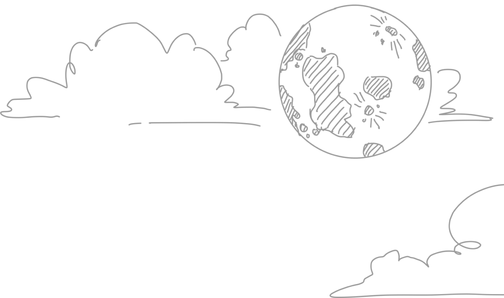
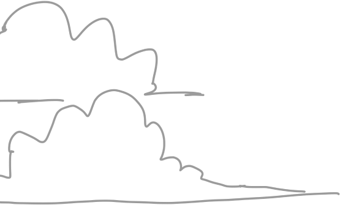
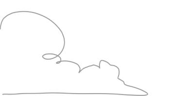
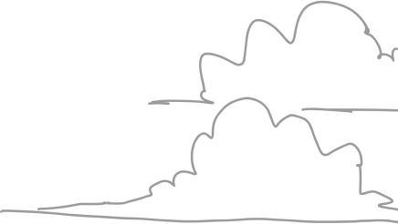
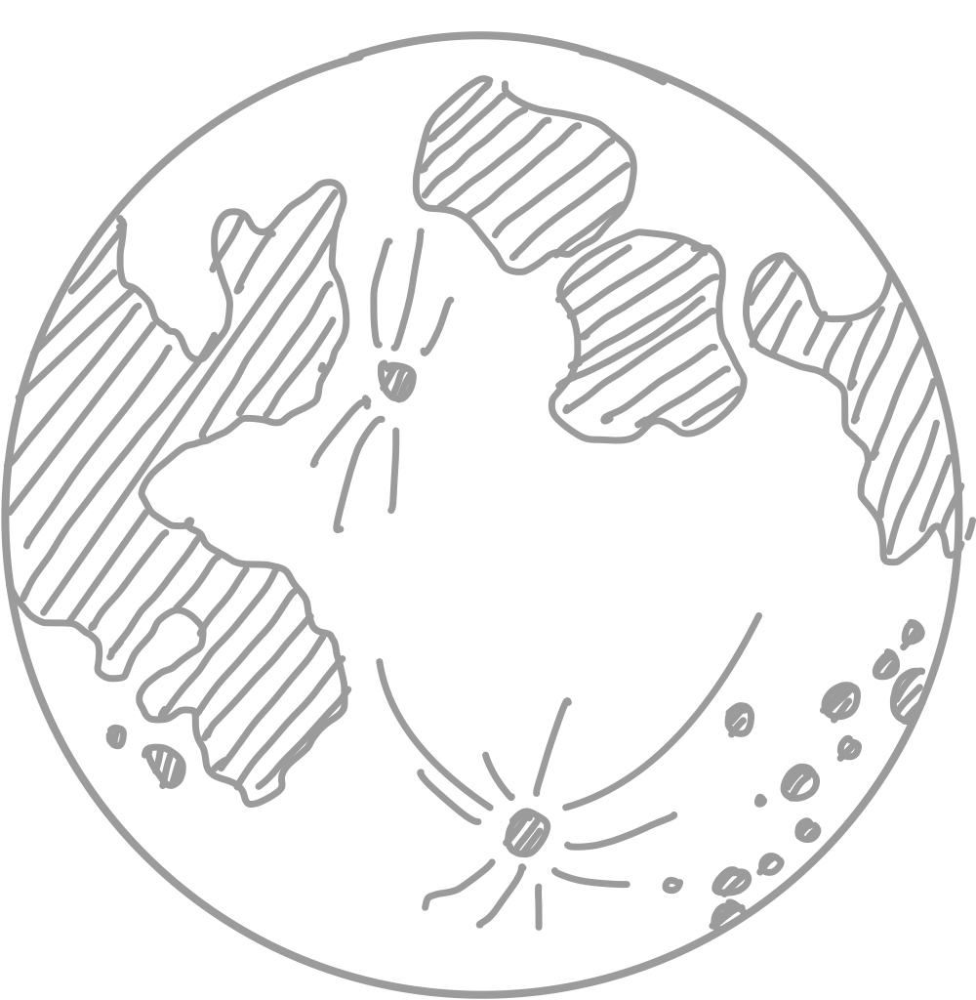

In our entire solar system, the only object that shines with its own light is the Sun. That light always beams onto Earth and Moon from the direction of the Sun, illuminating half of our planet in its orbit and reflecting off the surface of the Moon to create moonlight.
Like Earth, the Moon has a day side and a night side, which change as the Moon rotates. The Sun always illuminates half of the Moon while the other half remains dark, but how much we are able to see of that illuminated half changes as the Moon travels through its orbit.





When sunlight is illuminating only the Moon's far side – the side we can't directly see from Earth – that phase is called a new moon. When sunlight illuminates only the Moon's near side – the side that always faces Earth – we call that a full moon. The rest of the month, we see a different amount of the daytime side of the Moon each day. These continually changing views of the sunlit part of the Moon are the Moon's phases. The eight lunar phases are, in order: new moon, waxing crescent, first quarter, waxing gibbous, full moon, waning gibbous, third quarter and waning crescent. The cycle repeats once a month (every 29.5 days).
A full moon occurs when the side of the Moon facing Earth is fully lit up by the Sun. There are a few different types of unusual full moon types, which include blood moons, supermoons, blue moons, and harvest moons, and others.